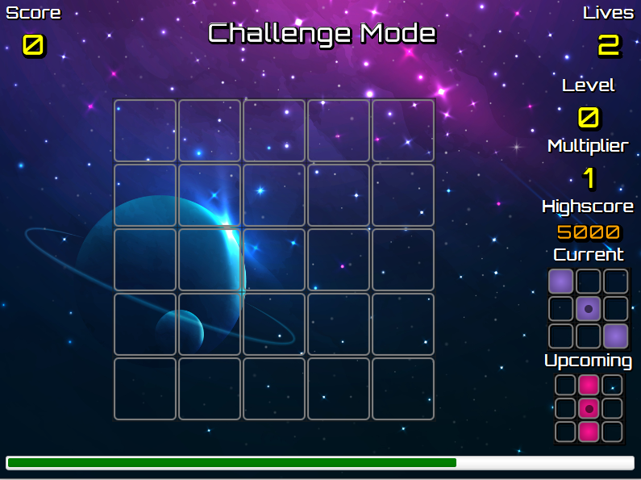
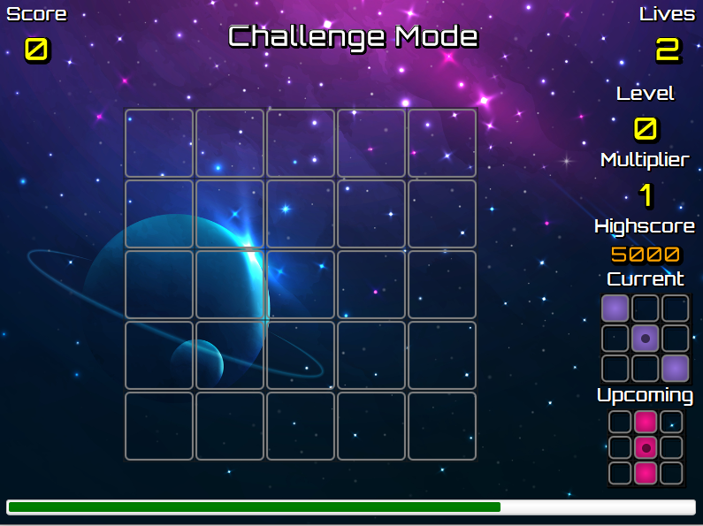
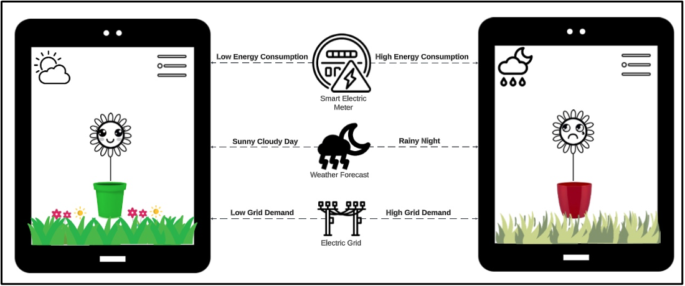
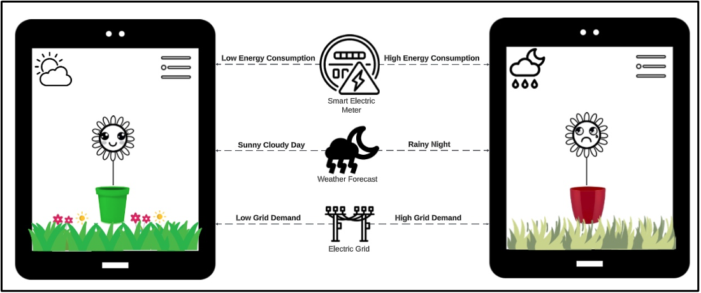

Portfolio
TetrECS
I have developed a Tetris-inspired game using JavaFX that offers both a classic single-player mode and an engaging multiplayer mode. In the multiplayer mode, I implemented real-time functionality, allowing players to create parties, chat, and compete with friends, adding an exciting social dimension to the game. I also designed and coded interactive gameplay elements, ensuring smooth block movement, rotation, and an effective scoring system to keep players engaged. To enhance the overall user experience, I created a user-friendly interface with responsive game controls, making it easy for players to enjoy the game.
 


Coronavirus Database
For my coursework project, I embarked on a comprehensive data analysis and modeling endeavor centered around COVID-19 statistics. This project demanded the transformation of raw data from a CSV file into structured SQL tables, meticulously designed to adhere to the Boyce Codd Normal Form (BCNF) principles for optimal data integrity and efficiency. Additionally, I created a GNUPlot script to plot the cumulative deaths of the top 10 countries with the highest cumulative deaths as part of my extension.
eGarden
During my Interaction Design coursework, my team and I developed an interactive tool called eGarden to help people optimize their home energy use with advanced energy technologies. We started with a literature review of relevant studies and conducted in-depth user interviews, followed by first-pass coding and thematic analysis to identify key themes and latent insights. We detailed these themes with illustrative quotes and created an affinity diagram to visualize concepts and relationships. This thorough analysis enabled us to articulate a clear problem statement that our tool could address. We then developed a low-fidelity prototype, produced a video explanation, and conducted evaluations with another group, refining our design based on their feedback through thematic analysis. This comprehensive process showcased our ability to translate theoretical research into practical, user-centered solutions.
 

Ad Auction Dashboard
During my coursework, our team developed an ad auction dashboard where users could upload their campaign zip files containing server_log, impression_log, and click_log. We extracted statistics from these logs and displayed them as graphs, allowing users to filter data by age, user ID, context, and date. The system supported multiple user roles: admins, editors, and viewers. Admins could manage user accounts, create and modify campaigns, and add filters; editors could adjust campaigns and filters; viewers could only view the campaigns. Additionally, users could export graphs as PNGs and data as CSVs. This project demonstrated our ability to create a comprehensive and user-friendly ad auction analysis tool.
Haskell Problem Solving Code
During my Programming III coursework, I tackled various complex problems using Haskell. One notable challenge was solving a circuit puzzle, which required rotating pieces and finding an optimal path from the source tile to the destination tile. This task demanded an efficient algorithm to minimize computational time, which I successfully implemented. Additionally, I delved into the intricacies of the lambda calculus language by developing a parser and printer for it in Haskell. I further extended my understanding by encoding let blocks using lambda calculus, showcasing my ability to apply theoretical concepts to practical scenarios. These accomplishments, reflecting both problem-solving skills and theoretical knowledge, culminated in achieving a commendable grade of 90%
Distributed File System
During my Distributed Systems coursework, I created a distributed storage system using Java, networking, and distributed systems principles. The system featured a Controller and multiple Data Stores (Dstores), supporting concurrent client requests for storing, loading, listing, and removing files. Each file was replicated R times across different Dstores, with the Controller managing file allocation and sizes. Clients accessed files directly from Dstores to improve scalability. Although all processes ran on the same machine, the design was applicable to multi-server systems. The Controller waited for at least R Dstores to join before serving requests, and performed rebalance operations to ensure even file distribution and replication. This project highlighted my skills in developing a scalable and robust distributed storage solution.
Programming Language
During my Programming Language Concepts coursework, my team and I designed and implemented a domain-specific programming language for querying simple Graph Data documents. Using Happy for parsing and Alex for lexing in Haskell, we developed a language inspired by existing query languages, tailored to solve specific problems related to graph data manipulation. Our project involved creating an appropriate syntax and writing an interpreter to handle queries and manipulations. We tackled five example problems by writing programs in our language to solve them, which, along with our interpreter's Haskell sources, comprised our initial submission. For the second submission, we documented our design decisions in a programming language manual and solved five additional unseen problems, demonstrating our language's robustness. This project required creative and clean syntax design, effective error handling, and the ability to meet qualitative and quantitative performance benchmarks, ultimately showcasing our skills in language design and implementation.